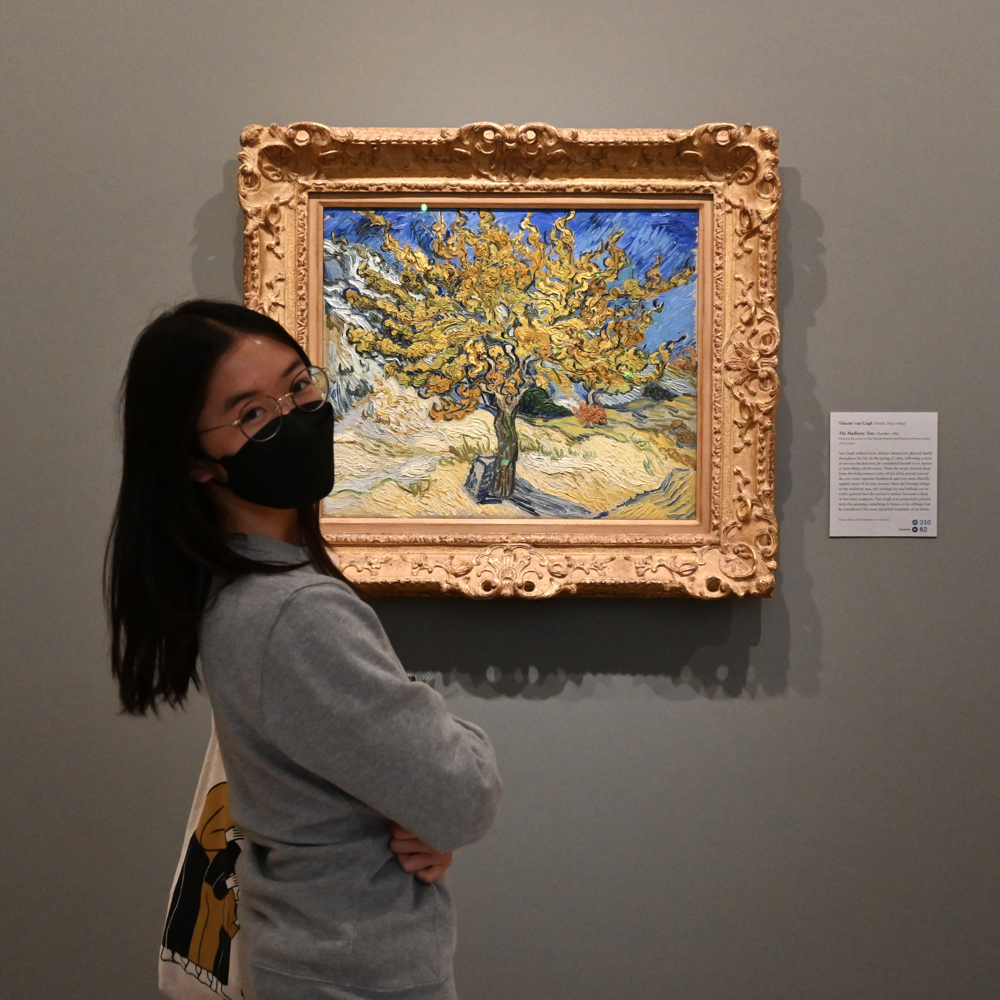
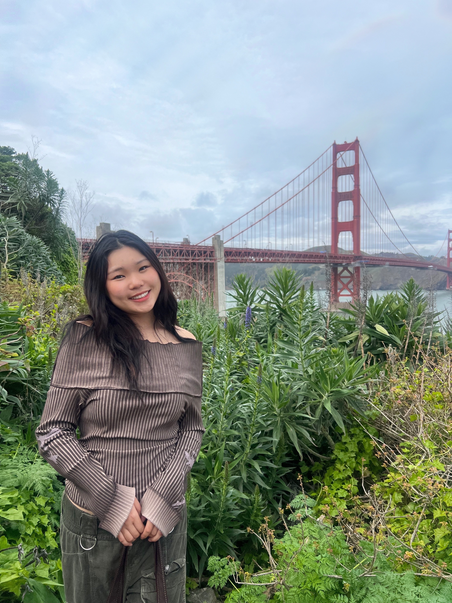
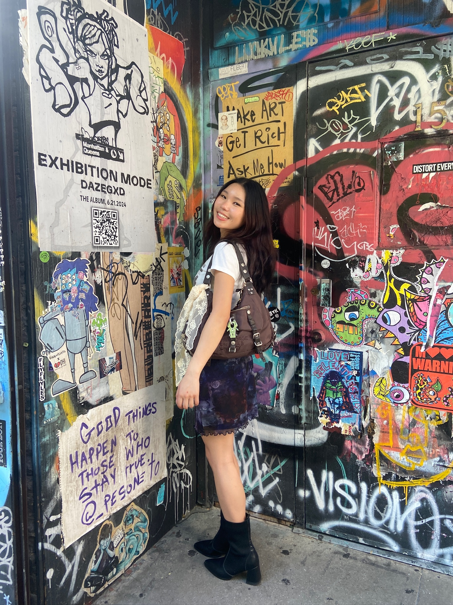
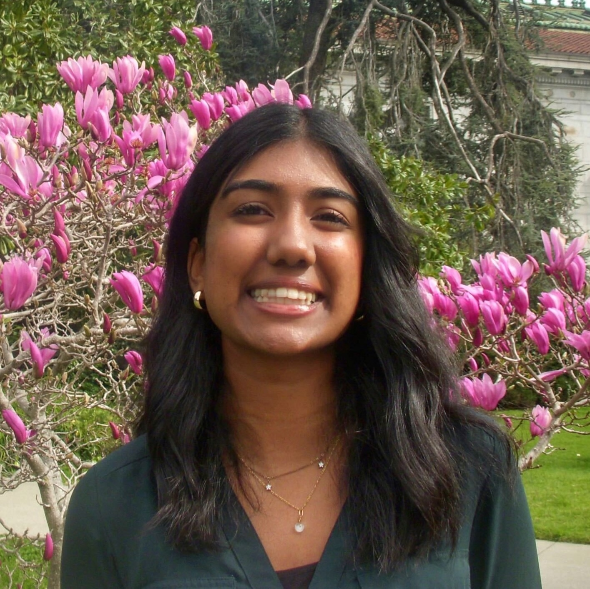
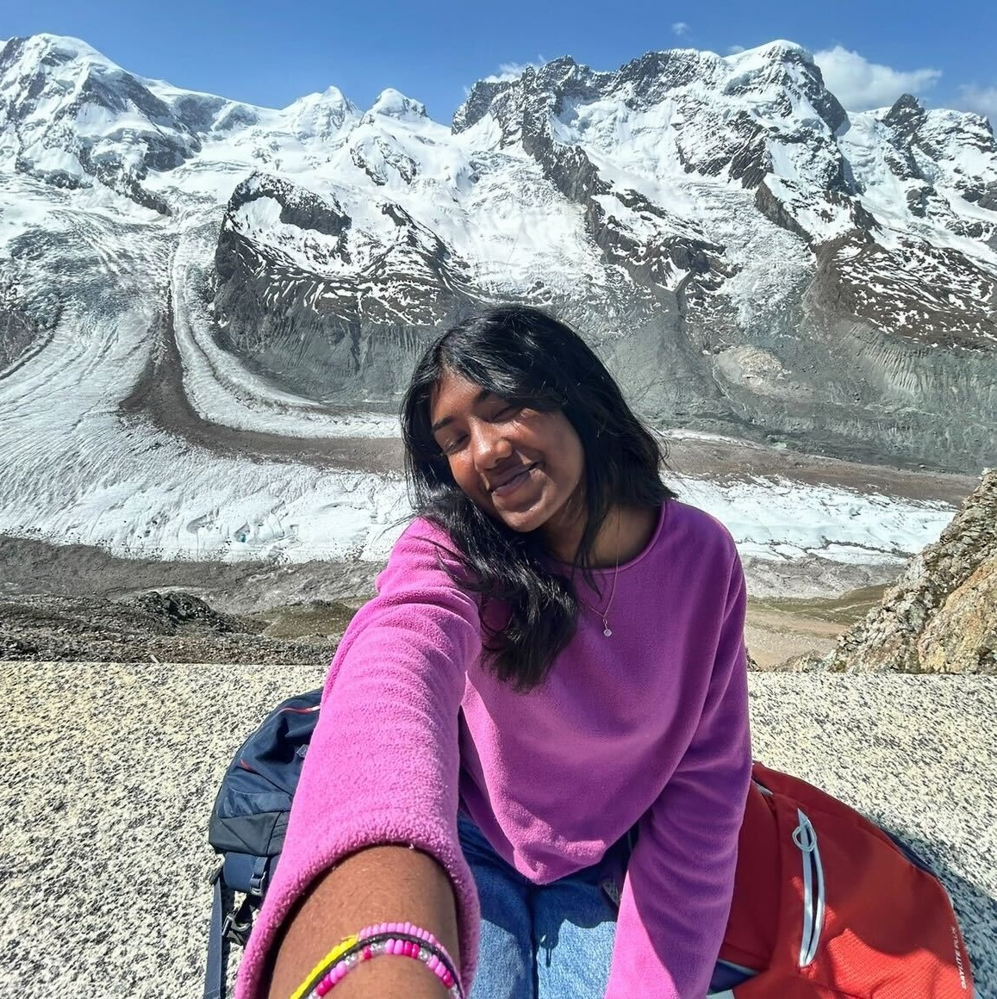
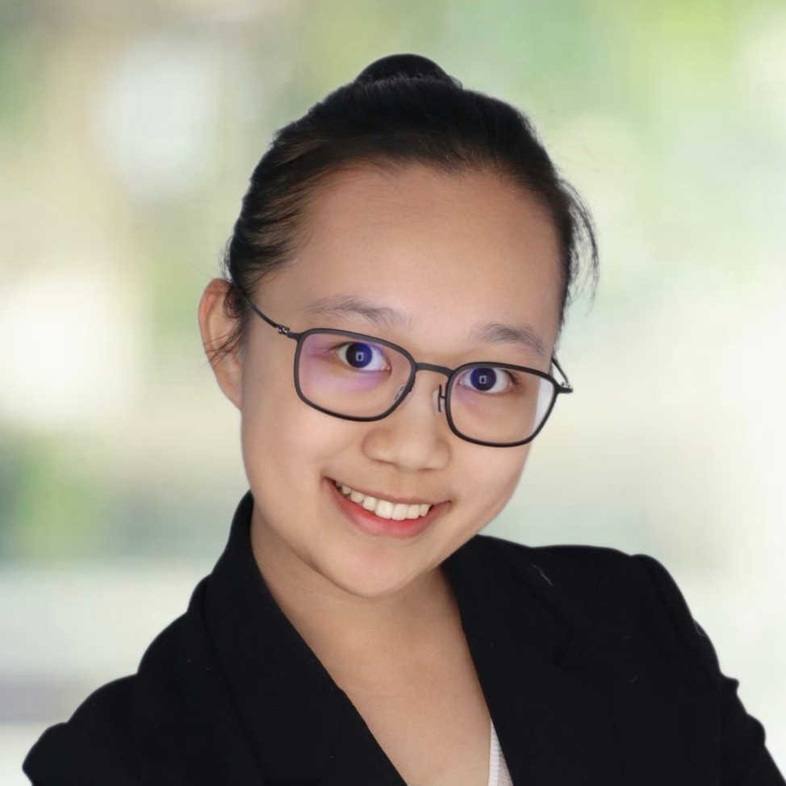
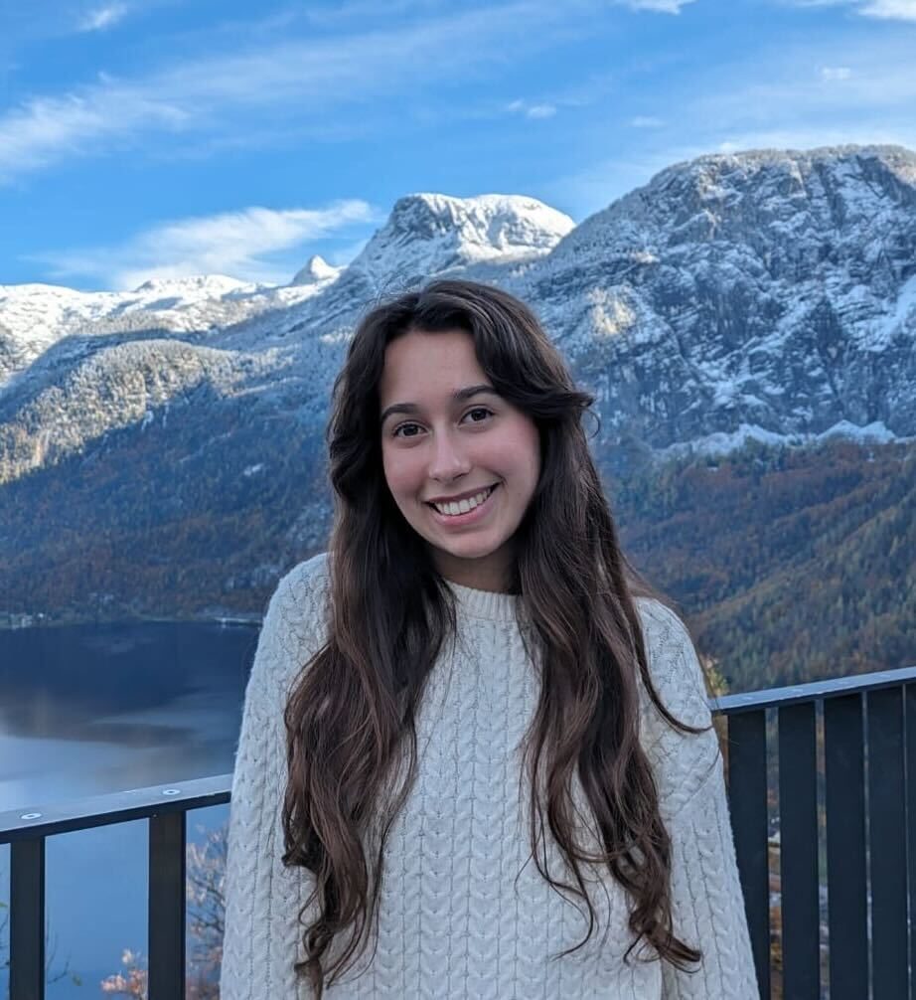
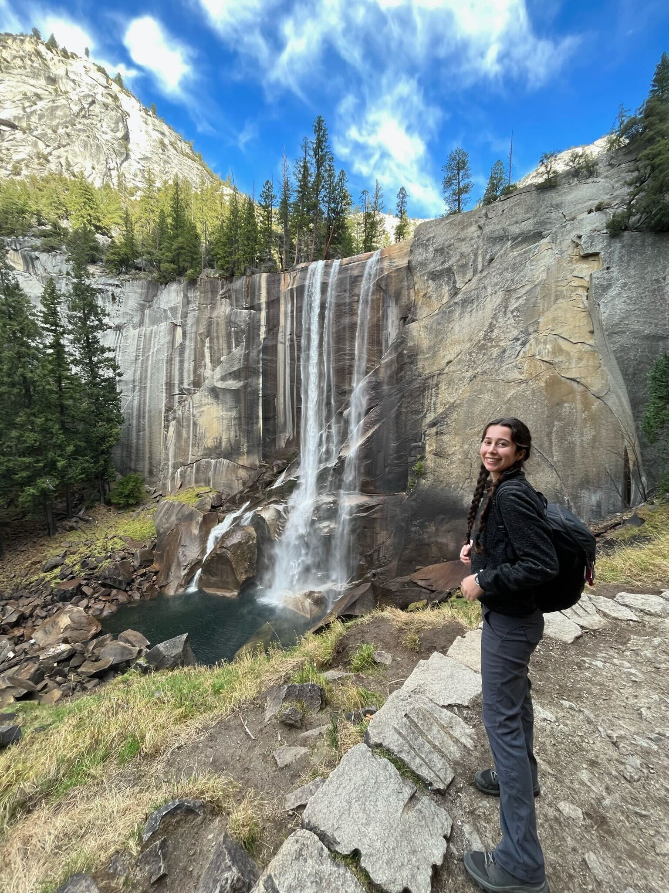

Abby Wang
Undergraduate Researcher & Graphic Designer
abbywang@berkeley.edu
Abby is a fourth-year majoring in Molecular & Cell Biology and Neuroscience with interests in all-things related to microbiology, the gut-brain axis, and graphic design. At the Rubin Lab, Abby worked on improving CAST editing efficiency with Amanda and Leo. She is now mentored by and advancing microbiome editing with Lindsey. She also performs various design-related tasks around the lab, including designing and managing this website! Outside of her studies, she enjoys tackling her reading list, museum hopping, and picking up niche hobbies.


Aria Kim
Undergraduate Researcher
ariakim@berkeley.edu
Aria Kim is an undergraduate student at UC Berkeley studying Molecular & Cellular Biology and Public Health with interests in microbiology, health equity, and bioethics. In the lab, she investigates microbial genome editing, exploring molecular mechanisms through functional genomics. Outside the lab, she enjoys watching live bands, falling down niche rabbit holes, and justifying her latest impulsive purchase.


Varsha Sivanath
Undergraduate Researcher
vsiv@berkeley.edu
Varsha is a third-year student majoring in Nutrition Sciences & Metabolic Biology, with interests in the intersection of nutrition, metabolism, and health. In the lab, she works under Lindsey, to explore microbiome editing and selection. Outside of lab, she enjoys hiking, running, leaving behind a lot of unfinished art projects, and making lattes!


Hengyi Yang
Undergraduate Researcher
hengyi1116@berkeley.edu
Hengyi is an undergraduate student majoring in Microbial Biology and Nutritional Science, with interests in microbiology, immunology, and nutrition. In the Lab, she is mentored by Kuang and works on searching for novel RNA-guided editors. Outside the lab, Hengyi enjoys dancing, aerobics, and long-distance running.


Ashley Killian
Undergraduate Researcher
ashleykillian@berkeley.edu
Ashley is a third-year student double-majoring in Molecular & Cell Biology and Anthropology, with interests in immunology, molecular medicine, and human health. In the Rubin Lab, she is mentored by Bingliang and works on identifying novel RNA-guided genome editors and studying approaches for genetic tool delivery. Outside the lab, Ashley enjoys concerts, backpacking, and traveling.